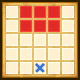

| Lv: | 150 |
|---|---|
| HP: | |
| MP: | |
| ATK: | |
| DEF: | |
| AGL: | |
| WIS: | |
| Move: | |
| Weight: | 65 |
| Weaknesses: |  |
 |
/ |  |
 |
|---|---|---|---|---|---|
| Resistances: |  |
 |
/ |  |
 |
| Immunities: |  |
| Family: |  |
Role: |  |
Element: |  |
|---|
Note: All perks/abilities denoted with an * are using unofficial translations
| Abilities | ||||||
|---|---|---|---|---|---|---|
| Level | Type | Name | MP | Element | Range | Description |
| 1 |  |
Rebirth of Darkness* 闇の再生 |
0 |  |
 Self |
Restores a moderate amount of the user's MP and raises Dark Forces for 3 turns (Times usable: 3) |
| 1 |  |
Unleashed Dark Forces | 165 | |
 Radius 4 |
Deals huge breath damage (450 base potency) to all enemies in area of effect, nullifies Self HP Healing Effects for 3 turns Can only be used with 6 stages of Dark Forces, removes all stages of Dark Forces after use |
| 31 |  |
Destructive Barrage* 破壊の魔弾 |
138 | |
 Front |
Deals moderate spell damage to random enemies in area of effect 4 times, ignores some Light Damage Res |
| 54 |  |
Malferno* マガインフェルノ |
144 |  |
 Fan (L) |
Deals major Sizz-type breath damage (323 base potency) to all enemies in area of effect, often lowers AGL for 3 turns |
| Base Perks | ||
|---|---|---|
| Level | Name | Description |
| 1 | Max HP +30 | Raises max HP by 30 |
| 1 | Max MP +15 | Raises max MP by 15 |
| 1 | Sinister Cloak of Night* まがまがしい闇の衣 |
Battle start: Nullifies some status ailments for 3 turns Prevents incoming attacks from dealing over 30% of the unit's max HP for 10 turns |
| 1 | Dark Forces | When attacking or when any other ally is KO'd: Raises Dark Forces for 3 turns This perk can be triggered by an attack on an ally When attacked by enemy: Raises Dark Forces for 3 turns When a unit is in the Dark Forces state, the unit's damage dealt is increased by 10% each stage, and any damage taken is reduced by 10% each stage (6 stages total) |
| 110, 120, 130, 140 | Spell Potency/Recovery +2% | Raises spell potency/recovery by 2% |
| 110, 120, 130, 140 | Martial Potency/Recovery +2% | Raises martial potency/recovery by 2% |
| 110, 120, 130, 140 | Breath Potency/Recovery +2% | Raises breath potency/recovery by 2% |
| 150 | Ability Potency/Recovery +2% | Raises ability potency/recovery by 2% |
| Awakening Perks | ||
|---|---|---|
| Awakening | Name | Description |
| 1 | Resurrected Master of Destruction* よみがえった破壊神 |
Action start on odd turns until turn 10: Heals 10% of max HP and raises DEF, AGL, and Dark Forces for 3 turns |
| 2 | Zam Res +25 | Raises Zam resistance by 25 |
| 3 | Channeling Dark Forces* 高まる闇の力 |
Battle start: Raises Dark Forces and nullifies some status change removal effects for 3 turns |
| 3, 5 | Spell Potency/Recovery +5% | Raises spell potency/recovery by 5% |
| 3, 5 | Martial Potency/Recovery +5% | Raises martial potency/recovery by 5% |
| 3, 5 | Breath Potency/Recovery +5% | Raises breath potency/recovery by 5% |
| 4 | Frizz Res +25 | Raises Frizz resistance by 25 |
| 5 | Overflowing Darkness* みなぎる闇 |
When attacked by enemy: Heals 10% of the user's max HP |
| 1, 2, 3, 4, 5 | Stats Up | Raises HP, MP, ATK, DEF, WIS and AGL by 5% |